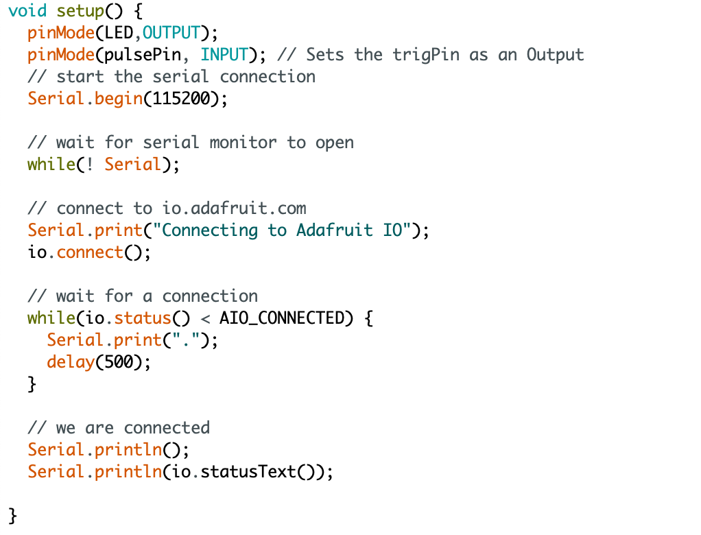
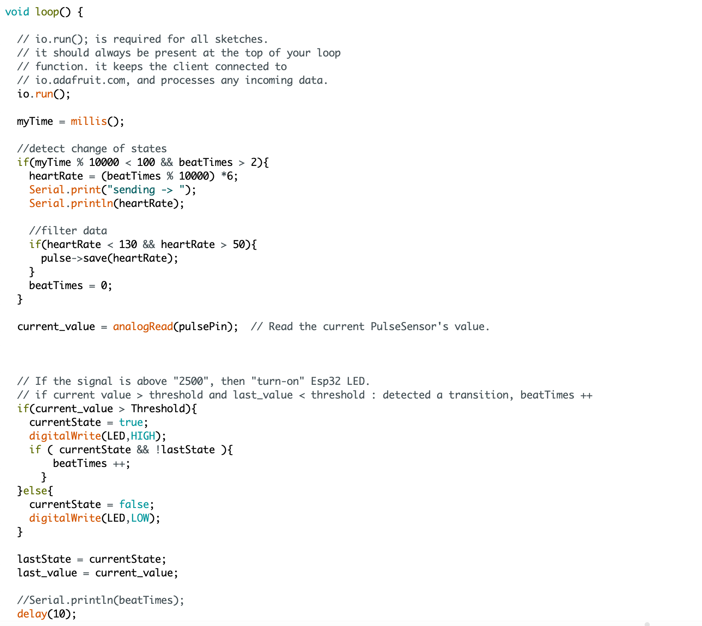

Pulse Sensor
I use the pulse sensor to capture my pulse and detect heartbeat. I caculate the BPM data and upload it to Adafruit IO feed in Arduino IDE.
 In p5.js, I divide my BPM data by time(24hours), and the curricane size and the background color will change based on my BPM data by time.